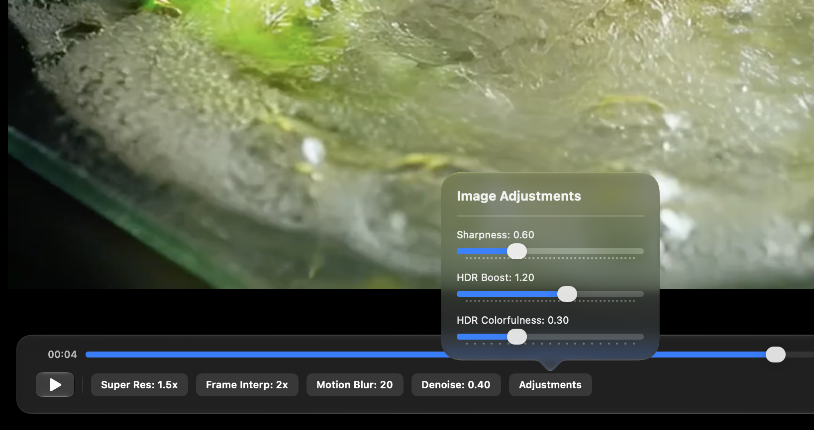

Super Resolution
Hardware-aware 2x, 4x, and Quality SR modes recover detail without reducing source quality.
VTPlayer turns Apple silicon into a real-time video enhancement engine.
A PTS-aware playback pipeline keeps enhanced frames and audio together while VideoToolbox handles the heavy lifting.
Hardware-aware 2x, 4x, and Quality SR modes recover detail without reducing source quality.
Generate fluid in-between frames with native Apple temporal processing.
Denoise, motion blur, sharpness, HDR boost, cache limits, and diagnostics are always close at hand.

SwiftUI, AVFoundation, Metal, and VideoToolbox come together in a focused player that feels at home on macOS and iOS.